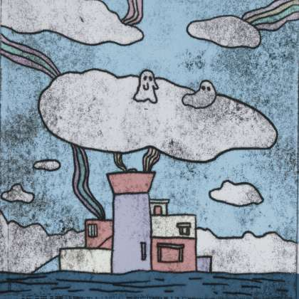

I / IV
灰色的悲伤
Tristezza grigia
原文 · Testo originale今天的天空是灰色的 灰色的云 灰色的空气 云朵里藏着的孩子们 是忧郁的 寂寞的点燃周围的太阳 光是有生命力的 但他无法穿透人们的眼睛 我想当所有的一切都亮起来的时候 生命也就没有存在的意义了吧 黑夜是美好的 它承载了无数孩子的 悲伤
Traduzione italianaIl cielo di oggi è grigio. Nuvole grigie, aria grigia, i bambini si nascondono tra le nuvole: è malinconia. Illuminano il sole intorno a loro, solitari. Il sole è vivo, ma non può illuminare gli occhi delle persone. La vita sembra priva di significato, quando tutto è illuminato, anche la notte bella e silenziosa porterà tristezza nei cuori dei bambini.
